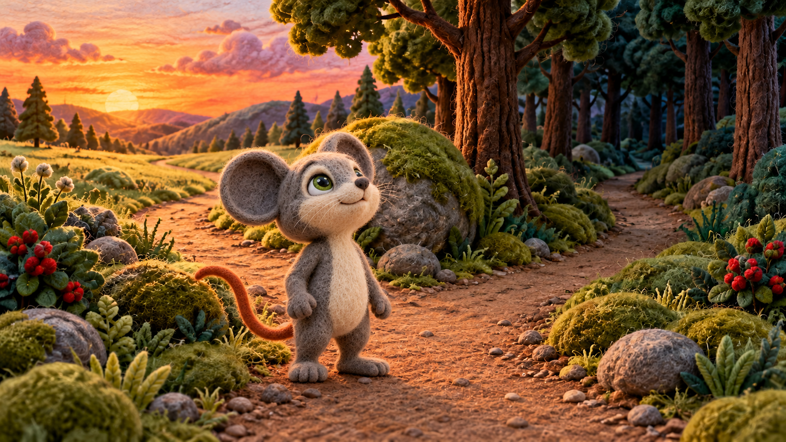
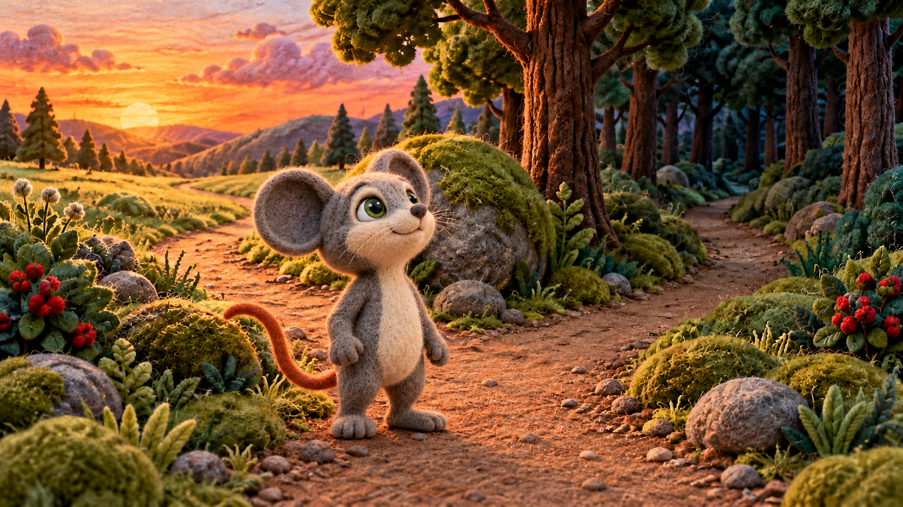
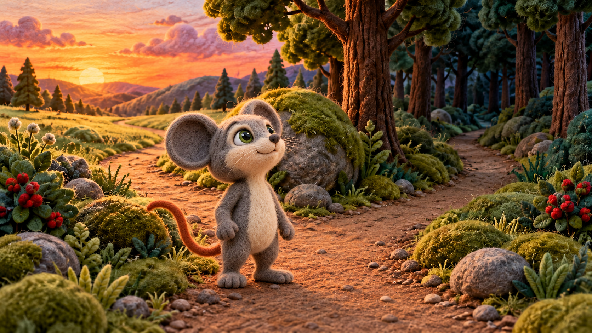

Selected L006 base

OWNER-SELECTED r004 · exact scene depiction. Zero paid/model calls. Only the face attention region changes; no translation, scaling or redraw. Selected original files and ledgers are unchanged.
Native protected pixels changed: 0 outside the recorded face alpha. This does not certify anatomy, acting, integration or video motion.




base

previous

candidate

{
"operation_id": "fork-l001-local-face-foundation-r004",
"method": "deterministic Pillow composite; no model/provider call",
"image_id": "S03-L001-B01-I02",
"path": "character/characters/lion_and_mouse_v7/interactions/scene_compositions/S03-L001-B01-I02_end_homeward_distance_r004_candidate.png",
"sha256": "5163cea0a436d27ec4b1ea4a16c857b5ffdb504a0309d587fe34d84a7d2beee6",
"canvas": [
1672,
941
],
"inputs": [
{
"role": "unchanged scene/camera/body/root",
"path": "character/characters/lion_and_mouse_v7/interactions/scene_compositions/S03-L006-B01-I02_end_decision_locked_background_r001_candidate.png",
"sha256": "7842d9c8a4c2f67848fb38195d11544e985f414a61e6a8f0a4658208bd80fb68"
},
{
"role": "selected local facial attention only",
"path": "character/characters/lion_and_mouse_v7/interactions/scene_compositions/S03-L001-B01-I02_end_homeward_distance_r003_candidate.png",
"sha256": "a01a967f40d9b66f4e64ccec324f30b14351acb651d6502e8c6d963af5355689"
}
],
"mask": {
"path": "stories/lion_and_mouse_v7/review/sequence_readiness_r001/local_fork_foundation_r001/face_alpha.png",
"sha256": "af2227c3d3f86e992afd68fcb998e9a870357fdcaeb06f54c817f4859a241f3c",
"ellipse_xyxy": [
636,
330,
860,
518
],
"soft_interior_fraction": 0.12,
"policy": "zero outside ellipse; feathering only inside"
},
"transforms": "none; identical native pixel coordinates",
"audio": {
"status": "available_in_r001",
"revision": "r001",
"wav": "voice/narration/lion_and_mouse_v7/en/r001/lines/S03-L001.wav",
"metadata": "voice/narration/lion_and_mouse_v7/en/r001/lines/S03-L001.json",
"metadata_sha256": "7e8d3c6723ad3e612468d1fe7589b398cb94c02b4f4ee675ff1d6374549b6c69",
"duration_seconds": 3.12,
"sample_rate_hz": 24000,
"channels": 1,
"sample_width_bits": 16,
"sample_count": 74880,
"sha256": "aa4488d7924659abcc4edea78989c335c6ba3392fe2084ff59e6d76df19ebce5",
"metadata_recorded_duration_seconds": 3.12,
"voice_id": "voice_v5bpq98uj7qh",
"provider": "gemini-3.8-flash-tts",
"metadata_text": "Home was still quite a distance away.",
"metadata_speaker": "NARRATOR",
"metadata_style": "lightly amused"
},
"protected_pixels": {
"base_sha256": "7842d9c8a4c2f67848fb38195d11544e985f414a61e6a8f0a4658208bd80fb68",
"candidate_sha256": "5163cea0a436d27ec4b1ea4a16c857b5ffdb504a0309d587fe34d84a7d2beee6",
"mask_sha256": "af2227c3d3f86e992afd68fcb998e9a870357fdcaeb06f54c817f4859a241f3c",
"mask_policy": "nonzero permits change",
"compared_pixels": 1540319,
"changed_protected_pixels": 0,
"status": "pass",
"integration_review": "pending; equality cannot prove anatomy/contact/light"
},
"provider_calls": 0,
"gpu_jobs": 0,
"retries": 0,
"owner_selection": "pending",
"technical_review": "pending native/fitted face/lighting/integration review; exact preservation alone is insufficient",
"source_selections_unchanged": true,
"fit": {
"schema": "feltwillow.rgb.v1",
"mode": "RGB",
"width": 1280,
"height": 720,
"source_size": [
1672,
941
],
"crop_box": [
0,
0,
1672,
940
],
"transform": "center-crop-lanczos-rgb-v1",
"pixel_sha256": "d4e653812bef4a0ee6342ab536050144de36f470546bb6f63d71cd9ec09fe883"
},
"review_observation": "Native full frame inspected: no obvious face-patch cut line; original skull/ears/body/root/feet/background remain exact outside face mask. Fitted rendering and canonical/neighbor compatibility need scoped review; no owner selection inferred."
}accept r004 — selected for S03-L001-B01-I02 at SHA256 5163cea0a436d27ec4b1ea4a16c857b5ffdb504a0309d587fe34d84a7d2beee6. Other scenes, anatomy certification and video rendering are separate.